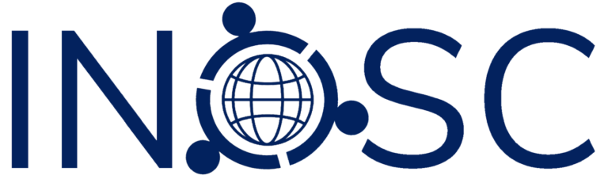

INOSC logo, https://osc-international.com/, pristupljeno 11.04.2024.
Međunarodna mreža zajednica otvorene nauke (eng. International Network of Open Science & Scholarship Communities, skraćeno INOSC) otvorila je javni poziv za projekte na kojima mogu volonterski biti angažovani članovi svih zajednica koje su deo INOSC-a. Takođe, članovi mogu predlagati nove teme. Posebno bi smo istakli deo u kome se naši članovi sa iskustvom u otvorenoj nauci mogu prijaviti da drže predavanja u zajednicama otvorene nauke širom sveta. Ovo je odlična prilika za umrežavanje za sve OSCS članove, kao i za članove OSCS mejling liste. Prenosimo vest u potpunosti na engleskom jeziku:
Over the years, many initiatives related to Open Science were launched and many tools were developed. Still, there might be a need for new materials, platforms, collaborations, etc. To be able to achieve this, working together with people from several Open Science Communities is the key.
It’s not only beneficial to combine knowledge from different Open Science Communities, it is also really fun to meet other people around the globe, with the same interest in Open Science. Members of local OSC that are part of the International Network of Open Science and Scholarship Communities (INOSC) can propose projects to work on with other OSC members. This can be members from your own community and/or also members from other OSC communities worldwide. Projects need to be specific and have a clear end goal (e.g., a product).
You can express interest in one (or more) of the already existing projects by contacting the contact person of your project(s) of interest (see below). You can also propose a new project. If you’d like to do that, please contact the OSC Representative of your local OSC. For Open Science Community Serbia (OSCS), please contact Nadica Miljković (e-mail: nadica.miljkovic@etf.bg.ac.rs).
Here you will find a short description of all projects that are already proposed, and that are looking for enthusiastic OSC members to get started/keep on going:
1. Piloting communication channels for OSCs
Local OSCs as well as INOSC currently use Slack to facilitate communication within and between OSCs. While Slack is a well-known platform, its (free) use also comes with some downsides. We would like a group of OSC members to dive into different alternatives to see which platform might be best to facilitate interactions within and between our local Open Science Communities. If you are interested in this project, please email Anita Eerland: anita.eerland@ru.nl
2. Connecting OSCs with Research Data Alliance (RDA)
Research Data Alliance (RDA) is an international, community driven initiative to facilitate open data, software and hardware. RDA organizes events and develops materials relevant to members of OSCs. This project is about connecting RDA with local OSCs so that OSC members can benefit from RDA work. If you are interested in this project, please email Nadica Miljković: nadica.miljkovic@etf.bg.ac.rs
3. Sharing newsletter items
Most local OSCs keep in touch with their members through a regular newsletter. It would be helpful if some of the items in local OSC newsletters could be collected and shared among OSCs (for reuse). We are looking for people that would like to dive into different ways to do this. If you are interested in this project, please email Florian Schubert: f.schuberth@utwente.nl
4. Open Science and crisis management
The COVID-19 pandemic has shown the value of Open Science in responding to situations of crisis. This working group will further explore how Open Science can be put to use for efficient and effective responses to crisis situations. The output of this project will be a white-paper, addressing the topic from an interdisciplinary perspective. If you are interested in this project, please email Loek Brinkman: loek.brinkman@dans.knaw.nl
5. INOSC Event
Over the last few years, more and more local Open Science Communities have started. Together we form a worldwide Open Science Network with enthusiastic people all interested in Open Science. It would be amazing if we could all meet each other and feel even more connected. The best way to do this is at an (online) INOSC event, to welcome members of all local OSCs. We already came up with some ideas for online interactive events, to make it possible to meet each other, even though we aren’t physically in the same space. If you would like to join us to plan, and organize this futuristic event, please email Mirjam Walpot: m.g.g.walpot@gmail.com
Open Science Speaker List
This ‘project’ is based around the creation of a list of speakers on a variety of topics. If you have experience with Open Science practices and you would like to help out another OSC around the world when they are looking for speakers, please fill out this form. The more people we have on this list, the better.
Don't be shy to share your knowledge, because we would love to hear more about you. As a speaker you can be invited to give a (short) presentation during a local (online) Open Science coffee-meeting or during a bigger event, it's all up to you, and depending on what you feel comfortable with.